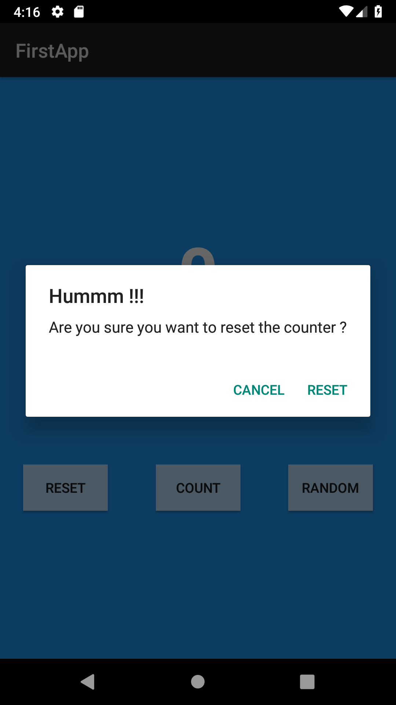

In this Codelabs, you will learn to create:
This codeLabs is based on the My First Android App in Java CodeLabs. It is recommanded to finish the previous CodeLabs before starting this one.
In this section, you will learn how to create a dialog using the AlertDialog android class.
We will replace the Toast button by a Reset button. When clicked this button will present to the user a "Are you sure you want to reset the counter ?" "Reset" "Cancel" dialog
Update the layout so the "Toast" button become a "Reset" button
Shift+F6 shortcut allow you to change the name of the variable everywhere it's usedYou have to change:
AlertDialog is created using a Builder class.
It's a common pattern in Android and Java to create new complex object.
Builder have different methods that allows to set different values that will be passed to the Object when the .create() method is called.
All the setter methods return the instance of the builder so it's possible to call them one after one like in the following example.
AlertDialog resetDialog = new AlertDialog.Builder(context)
.setTitle(R.string.reset_dialog_title)
.create();
The Builder needs a pointer to the Context where it will be displayed. Each activity is a context, so passing the this in argument will do the job.
Your work is to update the code to display the following pop up when the user click on the "Reset" button.

When the positive button will be clicked, the counter should set to 0 and the UI should be updated
You need to implement "OnClickListener" but first, you need to improve a bit the code.
So far, the counter value is stored in the TextView as CharSequence which NOT at all a good practice.
Create a class "Counter" in the package counter that will store the int value and implements the method we need:
Then update the code of the MainActivity to use this class
The setPositiveButton need an OnClickListener that declare a callback that will be called when the user is click on the button
There is a old fashion way to do that. Java 1.7 do not allow the use of lambda expressions. So you need to declare a new instance of the OnClickListener class just to pass the onClick method to the Dialog Builder.
.setPositiveButton(R.string.reset_dialog_positive, new DialogInterface.OnClickListener() {
@Override
public void onClick(DialogInterface dialogInterface, int i) {
resetCounter();
}
})
Java 1.8 allow you to pass to the method a lambda. But you need to use Java 1.8 to modify your gradle file to explain to the build script that it need to compile Java 1.8 code
In your app/build.gradle you have to add the following lines
compileOptions {
targetCompatibility 1.8
sourceCompatibility 1.8
}
in the android section
android {
compileSdkVersion 28
defaultConfig {
applicationId "fr.enssat.firstapp"
minSdkVersion 27
targetSdkVersion 28
versionCode 1
versionName "1.0"
testInstrumentationRunner "android.support.test.runner.AndroidJUnitRunner"
}
buildTypes {
release {
minifyEnabled false
proguardFiles getDefaultProguardFile('proguard-android.txt'), 'proguard-rules.pro'
}
}
compileOptions {
targetCompatibility 1.8
sourceCompatibility 1.8
}
}
This will allow you to write the following code to path the callback to the Dialog Builder
.setPositiveButton(R.string.reset_dialog_positive, (dialogInterface, i) -> resetCounter())
which remove a lot of bowler-plate lines of code
We already seen a Toast in the previous CodeLabs
Toast are not used a lot in todays UI as SnackBar are more gnerealy used.
Any way, it may be usefull to display simple messages like "It's done" or "Not yet implemented" during the development process
Toast are simple and fast to implement.
Add a toast in the resetCounter method when the counter is already reseted and the user tries to reset it.
The system will take care of displaying the Toast. Just a single Toast is displayed at any time. Following Toast will be displayed after the display of the current Toast.
You can try to display several Toast when the counter is reseted to demonstrate that.
Todays SnackBar is much more popular than the Toast.
It allows to add an action button to light display and in most of the case, it's a "Undo" feature. This a great feature for the user but a quite hard feature to develop.
Let's try to remplace our Dialog and Toast UI by a SnackBar way of doing it.
Press on reset will reset the counter right away if the counter is not reseted, displaying a Snackbar that allow the user to undo the reset.
Press on reset on a reseted counter will display an "Already done snackBar.
Make sure the Snackbar package is in your build.gradle file.
Have a look to the SnackBar Api and try to do it by yourself. It is not so different than what we arleady seen with Toast and Dialog.
In a menu, you can provide feature that are not use often but maybe usefull.
In this section, we will allow the user to save a counter and restore it later.
To implement a menu you will need to implement two methods. First the menu constructor, where you will define the items
of the menu. Then a the listener for user actions, where you define the actions for each items according to the current
state of the applicaiton.
The method of the Activity to override is onCreateOptionMenu
@Override
public boolean onCreateOptionsMenu(Menu menu) {
return super.onCreateOptionsMenu(menu);
}
This callback will be called by the system with a Menu object in argument. The creation of the menu consists in adding MenuItems
in this Menu object.
You can do it by hand, if you need to. Observe the Api of Menu and MenutItem.
You obtain a MenuItem by adding a id to the Menu. Once you get the MenuItem you can set a title, icon, etc.
The other way to create a menu is to use the MenuInfalter.
An Inflater is a tool that takes a Xml reference (layout, menu) and create the Java object by reflection. For instance, when we provide the R.layout.activity_main
to the setContent method, it use the LayoutInflater to create all the object of the layout and add it to the main Window.
We will do the same for a Menu
In the onCreateOptionMenu add the following line of code
getMenuInflater().inflate(R.menu.main_menu, menu);
Studio will complain that there is no resource main_menu in the project. Alt+Enter will provide you a way to create it.
The resource is a main resource and should be placed in the menu directory of the res directory.
Once created you should have something like that:
<?xml version="1.0" encoding="utf-8"?>
<menu xmlns:android="http://schemas.android.com/apk/res/android">
</menu>
You can now add XML tags inside the menu, each item tag should have at least the following attributes:
Items that can be shown in the ActionBar should also declare a icon. You can find Android menu icon
this way android:icon="@android:drawable/ic_menu_save"
Create a "Save" and "Restore" menu item with id respectively save_menu and restore_menu id.
The onOptionsItemSelected is called by the system with the MenuItem object clicked by the user.
Using the getItemId method, retreive the id of the item. use a switch case to do the action.
Implement the save and restore menu
This is the end